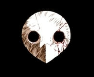

Musica de fondo
NOTICIAS
CURIOSIDADES
QUIZ
ARTE
No está soportado el vídeo
EVAGOTCHI EVA-00/EVA-01/EVA-02
CONSIGUE EL TUYO
VIDEOJUEGOS DE NEON GENESIS EVANGELION
REBUILD OF EVANGELION
CATEGORIAS
Neon Genesis Evangelion
Evangelion: Death and Rebirth
The End of Evangelion
Rebuild of Evangelion
Personajes
Angeles
NERV
Videojuegos
Articulos
Merch